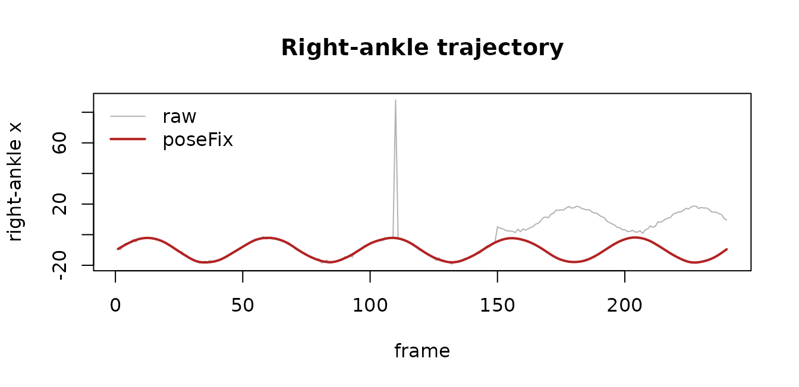
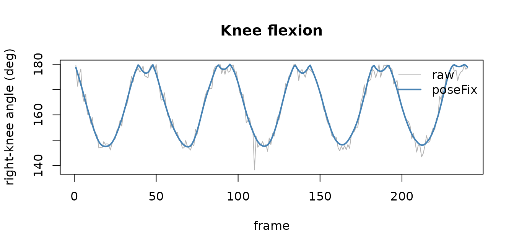

Markerless pose to gait: OpenPose -> poseFix -> analysis
Source:vignettes/pose-pipeline.Rmd
pose-pipeline.Rmd
library(PhysioMoCap)
#> Loading required package: PhysioCoreThe pipeline
Markerless pose estimators (OpenPose, MediaPipe, DeepLabCut) turn ordinary video into 2D keypoint trajectories, but those trajectories are noisy: keypoints drop out, jump, and – as the legs cross during gait – get their left/right labels swapped. This vignette runs the full chain:
readOpenPose() -> poseFix() -> joint angles / gait metrics -> downstream
(ingest) (clean) (analyse)PhysioMoCap already ingests pose data
(readOpenPose(), readMediaPipe(),
readDeepLabCut(), readOpenCap()) into a
PhysioExperiment, and provides the downstream biomechanics.
poseFix() is the cleaning step in between (a generalised
implementation of the method in Sugiyama, Uno & Matsui 2023,
PLOS Comput Biol 19:e1009989).
A recording (simulated OpenPose output)
To keep the vignette self-contained we simulate a short walking
recording with the same structure readOpenPose() returns –
assays keypoint_x, keypoint_y,
confidence, and named keypoints – and inject the three
characteristic errors.
labels <- c("Neck", "RShoulder", "LShoulder", "MidHip",
"RHip", "RKnee", "RAnkle", "LHip", "LKnee", "LAnkle")
base_x <- c(0, -18, 18, 0, -10, -10, -10, 10, 10, 10)
base_y <- c(0, 15, 15, 60, 60, 105, 150, 60, 105, 150)
n <- 240; t <- seq_len(n)
sway <- 8 * sin(2 * pi * t / 48) # gait sway
flex <- 6 * (1 - cos(2 * pi * t / 48)) # knee flexion over the cycle
X <- outer(rep(1, n), base_x); Y <- outer(rep(1, n), base_y)
colnames(X) <- colnames(Y) <- labels
for (kp in c("RKnee", "RAnkle")) X[, kp] <- X[, kp] + sway
for (kp in c("LKnee", "LAnkle")) X[, kp] <- X[, kp] - sway
X[, "RKnee"] <- X[, "RKnee"] + flex; X[, "LKnee"] <- X[, "LKnee"] - flex
X <- X + matrix(rnorm(n * ncol(X), 0, 0.6), n)
Y <- Y + matrix(rnorm(n * ncol(Y), 0, 0.6), n)
conf <- matrix(0.9, n, ncol(X), dimnames = list(NULL, labels))
# inject errors: a confidence dropout, a jump, and a left/right leg swap
conf[60, "RKnee"] <- 0.02 # dropout
X[110, "RAnkle"] <- X[110, "RAnkle"] + 90 # jump
swap <- 150:n # leg-label swap
for (pr in list(c("RHip","LHip"), c("RKnee","LKnee"), c("RAnkle","LAnkle"))) {
tx <- X[swap, pr[1]]; X[swap, pr[1]] <- X[swap, pr[2]]; X[swap, pr[2]] <- tx
ty <- Y[swap, pr[1]]; Y[swap, pr[1]] <- Y[swap, pr[2]]; Y[swap, pr[2]] <- ty
}
pose <- PhysioCore::PhysioExperiment(
assays = S4Vectors::SimpleList(keypoint_x = X, keypoint_y = Y, confidence = conf),
colData = S4Vectors::DataFrame(label = labels, type = "keypoint",
model = "BODY_25"),
samplingRate = 30)
pose
#> class: PhysioExperiment
#> dim: 240 x 10
#> assays(3): keypoint_x, keypoint_y, confidence
#> samplingRate: 30 Hz
#> channels(10): Neck, RShoulder, LShoulder, MidHip, RHip ...
#> colData names(3): label, type, modelClean with poseFix()
fixed <- poseFix(pose)
report <- S4Vectors::metadata(fixed)$poseFix
report$counts # anomalies flagged, by criterion
#> low_confidence segment_length temporal_jump joint_angle
#> 1 1 2 24
report$leg_swaps # frames whose left/right legs were un-swapped
#> [1] 91poseFix() first restores left/right leg continuity, then
flags keypoints on four criteria (low confidence, implausible segment
length, frame-to-frame jump, out-of-range joint angle), sets them to
NA, interpolates and smooths.
Before vs after
rx <- SummarizedExperiment::assay(pose, "keypoint_x")[, "RAnkle"]
rxc <- SummarizedExperiment::assay(fixed, "keypoint_x")[, "RAnkle"]
plot(rx, type = "l", col = "grey70", xlab = "frame",
ylab = "right-ankle x", main = "Right-ankle trajectory")
lines(rxc, col = "firebrick", lwd = 2)
legend("topleft", c("raw", "poseFix"), col = c("grey70", "firebrick"),
lwd = c(1, 2), bty = "n")
The jump at frame 110 and the left/right swap from frame 150 are gone; the cleaned trajectory (red) is continuous.
Downstream: knee flexion angle
The cleaned keypoints flow straight into analysis. Here is the right-knee angle (hip-knee-ankle) computed from the raw vs cleaned keypoints:
knee_angle <- function(pe, hip, knee, ankle) {
X <- SummarizedExperiment::assay(pe, "keypoint_x")
Y <- SummarizedExperiment::assay(pe, "keypoint_y")
v1x <- X[, hip] - X[, knee]; v1y <- Y[, hip] - Y[, knee]
v2x <- X[, ankle] - X[, knee]; v2y <- Y[, ankle] - Y[, knee]
acos(pmin(pmax((v1x * v2x + v1y * v2y) /
(sqrt(v1x^2 + v1y^2) * sqrt(v2x^2 + v2y^2)), -1), 1)) * 180 / pi
}
a_raw <- knee_angle(pose, "RHip", "RKnee", "RAnkle")
a_fixed <- knee_angle(fixed, "RHip", "RKnee", "RAnkle")
plot(a_raw, type = "l", col = "grey70", xlab = "frame",
ylab = "right-knee angle (deg)", main = "Knee flexion")
lines(a_fixed, col = "steelblue", lwd = 2)
legend("topright", c("raw", "poseFix"), col = c("grey70", "steelblue"),
lwd = c(1, 2), bty = "n")
The raw angle is corrupted by the errors; after
poseFix() it is a clean, cyclic gait signal ready for step
segmentation, range-of-motion, or muscle-synergy and network analyses
elsewhere in the ecosystem.
Where to go next
- For 3D marker or OpenSim-scaled data,
[
calculateJointAngles()] computes ISB / Grood-Suntay joint angles directly on aPhysioExperiment. - Cleaned kinematics feed the rest of the ecosystem – e.g. EMG muscle
synergies (
PhysioEMG), musculoskeletal networks (PhysioMSKNet), or cross-modal and organ-interaction analyses.